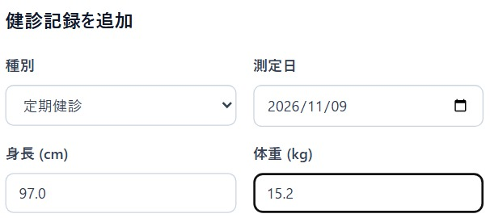
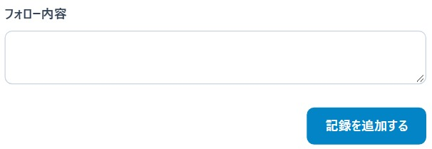
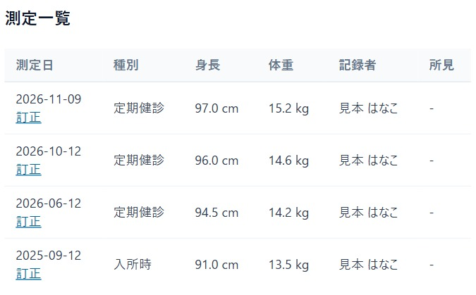
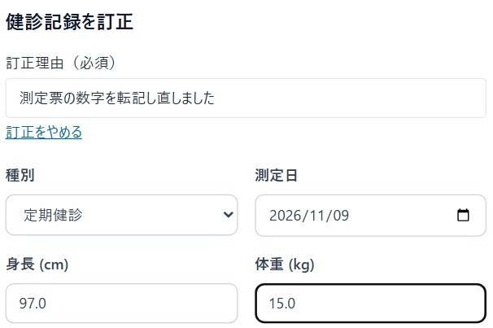
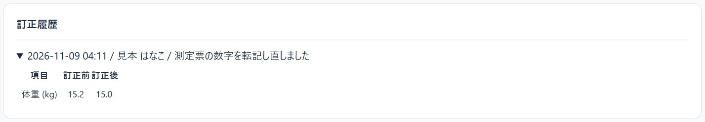
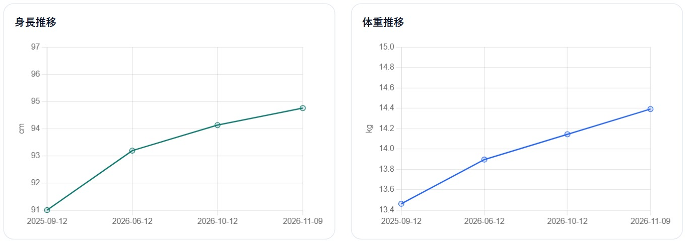

健診を記録する・測定値を訂正する
健康管理一覧で園児の「健診記録」を押します。健康サマリーの「健診記録とグラフ」からも同じ画面に進めます。
画面は架空の園児の記録です。画像を押すと大きく見られます。
1種別と測定日を確かめて入力する
園児の名前を確かめて「健診記録を追加」まで進みます。「種別」を選び、「測定日」に実際に測った日を入れます。身長はcm、体重はkgの欄に数字を入れます。
記録者や所見を残すときは、続きの欄に書きます。

測定日が空欄のまま送ると「checked_at」を含むエラー画面が出ることがあります。ブラウザーで戻り、測定日とほかの入力を確かめてから保存してください。
2追加した記録を一覧で見る
「記録を追加する」を押します。「健康診断記録を追加しました。」と出たら、「測定一覧」で日付と数字を確かめます。


3入力を間違えたとき
「測定一覧」で該当する日付の「訂正」を押します。「健診記録を訂正」と出たら、訂正理由を書き、間違えた欄を直します。
「訂正を保存する」を押します。「訂正履歴」で該当する行を押すと、項目ごとに「訂正前」「訂正後」が開きます。保存前にやめるときは「訂正をやめる」を押します。


「訂正」が見えないときは、編集できる職員に依頼してください。
4前の測定値と比べる
「身長・体重グラフ」で「直近1年」または「在籍期間すべて」を押します。身長と体重は別々のグラフで見ます。
グラフに使うのは「入所時」「定期健診」の記録です。「日常観察」「病後登園」の記録は「測定一覧」で確かめます。
